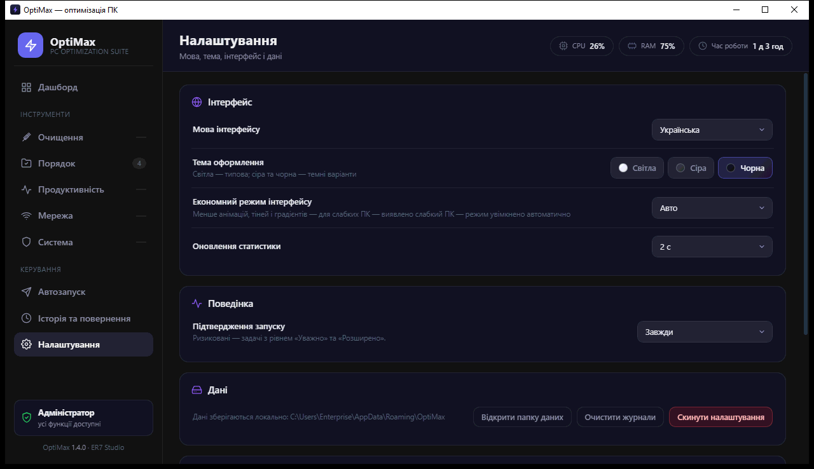

Оформлення · Приватність
3 теми · 5 мов
100% офлайн
Без телеметрії, акаунтів і мережевих запитів — усе на вашому ПК.


optimax-ua.vercel.app
Без телеметрії, акаунтів і мережевих запитів — усе на вашому ПК.
